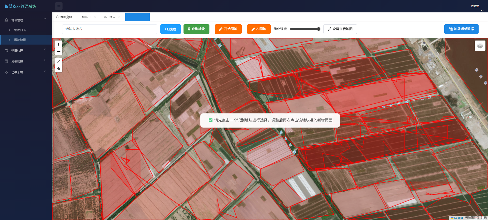
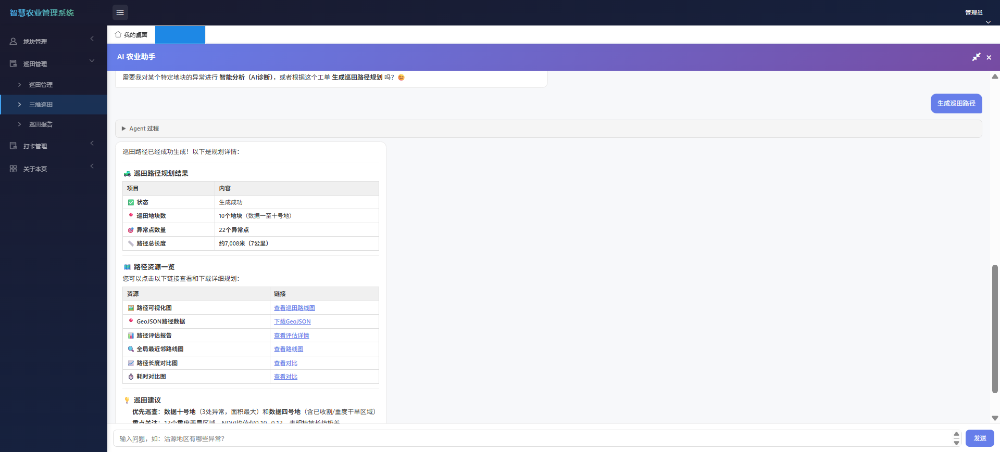
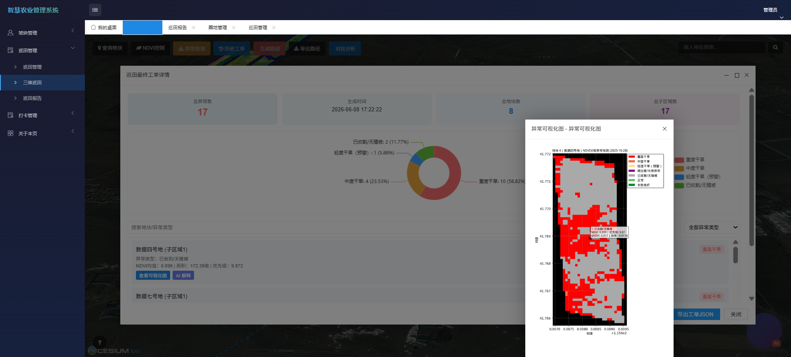
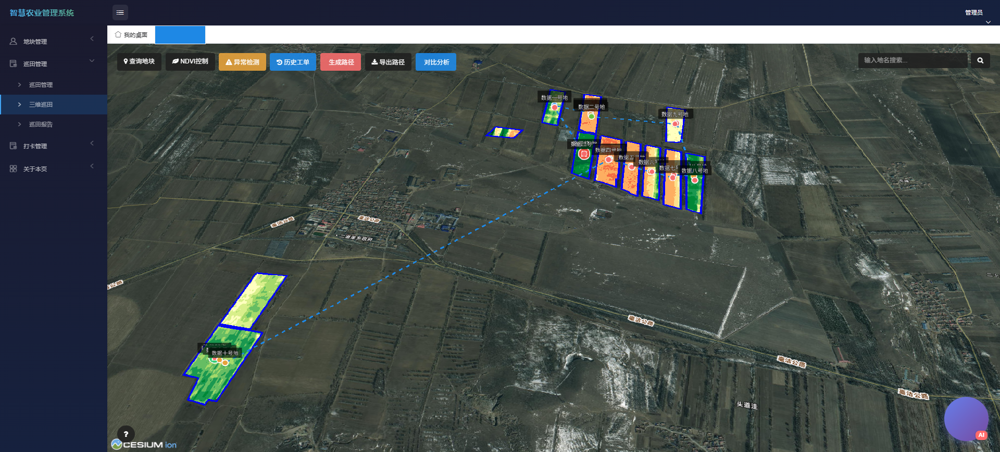
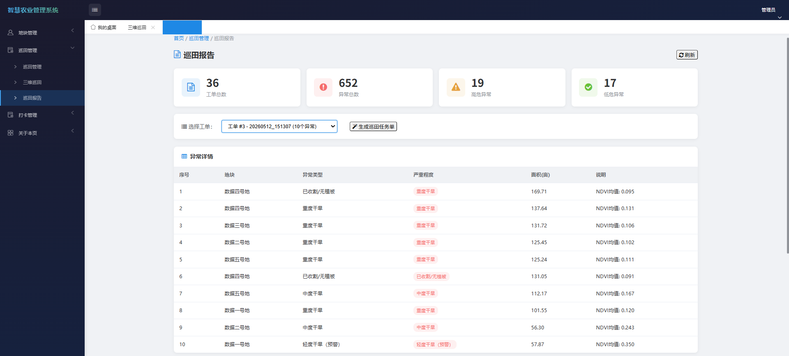
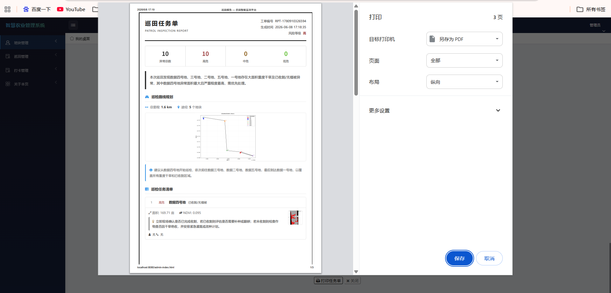

// 系统截图
界面展示
管理端与用户端的核心页面，覆盖登录、地图、巡田、报告全流程。
统一登录页
管理员 / 用户双角色切换
数据驾驶舱
统计卡片 + ECharts 图表

AI 自动圈地
YOLO11影像分割 + Leaflet 编辑

AI Agent 助手
ReAct 推理 + SSE 流式输出

异常检测结果
多时相分析 · 优先级排序

路径规划
2-opt 优化 · CesiumJS 可视化

巡田报告
LLM 智能生成分析报告

巡田任务工单
异常区域 · 巡检状态跟踪

GPS 地块打卡
射线法定位 · 自动匹配地块